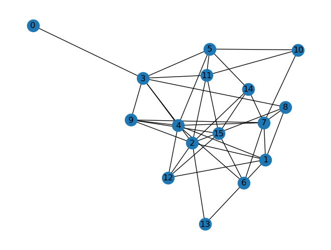
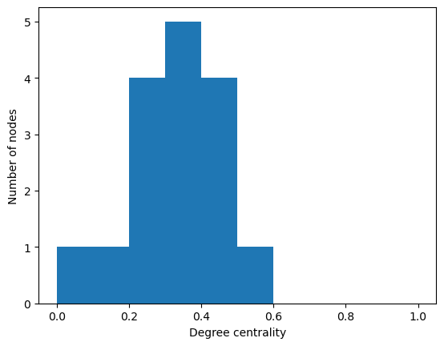
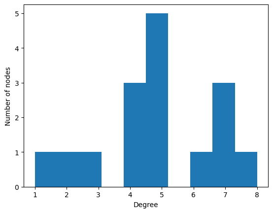
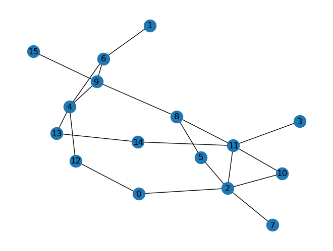
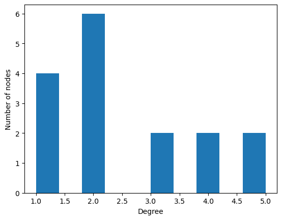
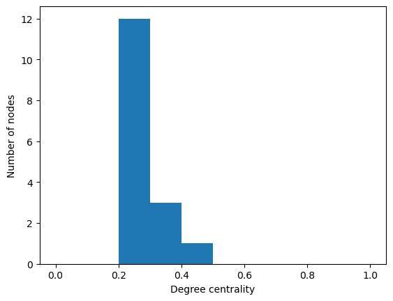
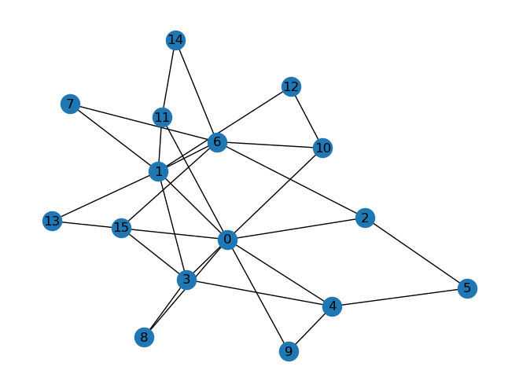
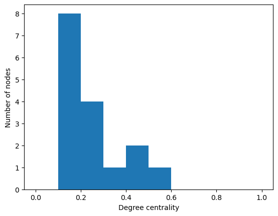

import matplotlib.pyplot as plt
import networkx as nxNetworkX - Graph Models
NetworkX - Graph Models
The contents of this notebook have been derived from “A First Course in Network Science” by Filippo Menczer. You can see their official Github repository here.
Contents:
For each of the models presented in this tutorial, we present the algorithm, and the corresponding NetworkX code function to generate the model.
Note: This notebook assumes you know the basics of Network X, that were shown in the “fundamentals” notebook. It will also use concepts from the “structural properties” notebook.
1. Random Network Model
The random network model, as formulated by Gilbert, has two parameters: the number of nodes \(N\), and the link probability \(p\). As in the book text, the algorithm for creating this network is as follows:
- Select a pair of nodes, say i and j.
- Generate a random number r between 0 and 1. If r < p, then add a link between i and j.
- Repeat (1) and (2) for all pairs of nodes.
# Gilbert random graph with n nodes and probability p of edge creation
G_random = nx.gnp_random_graph(n=16, p=0.3)
nx.draw(G_random, with_labels=True)
plt.show()
print("Is connected?", nx.is_connected(G_random))
print("Number of connected components:", nx.number_connected_components(G_random))
if nx.is_connected(G_random):
print("Average shortest path length:", nx.average_shortest_path_length(G_random))
else:
print("Graph is not connected")
print("Average clustering coefficient:", nx.average_clustering(G_random))Is connected? True
Number of connected components: 1
Average shortest path length: 1.775
Average clustering coefficient: 0.2418154761904762The betweeness centrality of random networks is uniformly distributed, and the degree distribution follows a Poisson distribution. The average degree of a random network is given by \(\langle k \rangle = p(N-1)\).
# Plot the centrality distribution
d_centrality = nx.degree_centrality(G_random)
ls_centralities = list(d_centrality.values())
plt.hist(ls_centralities, bins=10, range=(0, 1))
plt.xlabel("Degree centrality")
plt.ylabel("Number of nodes")
plt.show()
# Plot the degree distribution
d_degree = dict(G_random.degree())
ls_degrees = list(d_degree.values())
plt.hist(ls_degrees, bins=10)
plt.xlabel("Degree")
plt.ylabel("Number of nodes")
plt.show()
Erdös-Rényi random graph model
Instead of specifying the link probability \(p\), we can also generate a graph of \(N\) nodes with exactly \(M\) edges by using random.sample() to choose M of the possible edges generated with itertools.combinations():
# Erdos-Renyi graph with n nodes and m edges
G_ER = nx.gnm_random_graph(n=16, m=20)
nx.draw(G_ER, with_labels=True)
plt.show()
print("Is connected?", nx.is_connected(G_ER))
print("Number of connected components:", nx.number_connected_components(G_ER))
if nx.is_connected(G_ER):
print("Average shortest path length:", nx.average_shortest_path_length(G_ER))
else:
print("Graph is not connected")
print("Average clustering coefficient:", nx.average_clustering(G_ER))Is connected? True
Number of connected components: 1
Average shortest path length: 2.6333333333333333
Average clustering coefficient: 0.11666666666666667The betweeness centrality of random networks is uniformly distributed, and the degree distribution follows a Poisson distribution. The average degree of a random network is given by \(\langle k \rangle = p(N-1)\).
d_centrality = nx.degree_centrality(G_ER)
ls_centralities = list(d_centrality.values())
plt.hist(ls_centralities, bins=10, range=(0, 1))
plt.xlabel("Degree centrality")
plt.ylabel("Number of nodes")
plt.show()
# Plot the degree distribution
d_degree = dict(G_ER.degree())
ls_degrees = list(d_degree.values())
plt.hist(ls_degrees, bins=10)
plt.xlabel("Degree")
plt.ylabel("Number of nodes")
plt.show()
2. Small-World Model
The algorithm for generating a small-world network is as such:
- Begin with a ring of \(N\) nodes
- Connect each node to its \(k\) nearest neighbors (or \(k-1\) if k is odd).
- For each edge \((u, v)\), with probability \(p\), replace edge \((u, v)\) with \((u, w)\) where \(w\) is not a neighbor of \(u\).
# Watts-Strogatz small-world graph with n nodes, k neighbors, and probability p of rewiring
G_SW = nx.watts_strogatz_graph(n=16, k=4, p=0.2)
nx.draw(G_SW, with_labels=True)
plt.show()
print("Is connected?", nx.is_connected(G_SW))
print("Number of connected components:", nx.number_connected_components(G_SW))
print("Average shortest path length:", nx.average_shortest_path_length(G_SW))
print("Average clustering coefficient:", nx.average_clustering(G_SW))Is connected? True
Number of connected components: 1
Average shortest path length: 2.0166666666666666
Average clustering coefficient: 0.31250000000000006The betweeness centrality of small-world networks is also uniformly distributed, and the degree distribution follows a Poisson distribution. The average degree of a small-world network is given by \(\langle k \rangle = 2k\).
d_centrality = nx.degree_centrality(G_SW)
ls_centralities = list(d_centrality.values())
plt.hist(ls_centralities, bins=10, range=(0, 1))
plt.xlabel("Degree centrality")
plt.ylabel("Number of nodes")
plt.show()
# Plot the degree distribution
d_degree = dict(G_SW.degree())
ls_degrees = list(d_degree.values())
plt.hist(ls_degrees, bins=10)
plt.xlabel("Degree")
plt.ylabel("Number of nodes")
plt.show()3. Preferential Attachment Model
The Barabási-Albert preferential attachment model has two parameters: the number of nodes \(N\), and the number of links added at each step \(m\). Given these parameters, the algorithm is as follows:
- Start with a clique of \(m + 1\) nodes.
- Select \(m\) different nodes at random, weighted by their degree.
- Add a new node \(i\) and link it with the \(m\) nodes from the previous step.
- Repeat 2-3 until there are N nodes in the graph.
# Barabasi-Albert preferential attachment graph with n nodes and m edges
G_BA = nx.barabasi_albert_graph(n=16, m=2)
nx.draw(G_BA, with_labels=True)
plt.show()
print("Is connected?", nx.is_connected(G_BA))
print("Number of connected components:", nx.number_connected_components(G_BA))
print("Average shortest path length:", nx.average_shortest_path_length(G_BA))
print("Average clustering coefficient:", nx.average_clustering(G_BA))Is connected? True
Number of connected components: 1
Average shortest path length: 2.0166666666666666
Average clustering coefficient: 0.3369047619047619d_centrality = nx.degree_centrality(G_BA)
ls_centralities = list(d_centrality.values())
plt.hist(ls_centralities, bins=10, range=(0, 1))
plt.xlabel("Degree centrality")
plt.ylabel("Number of nodes")
plt.show()